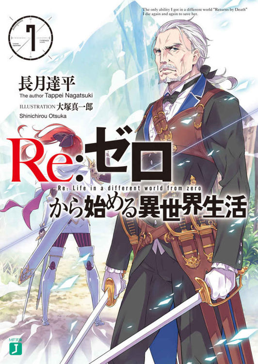
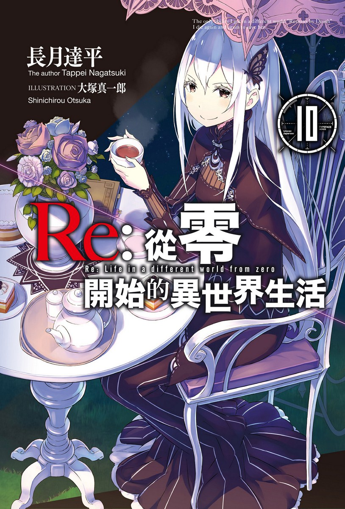
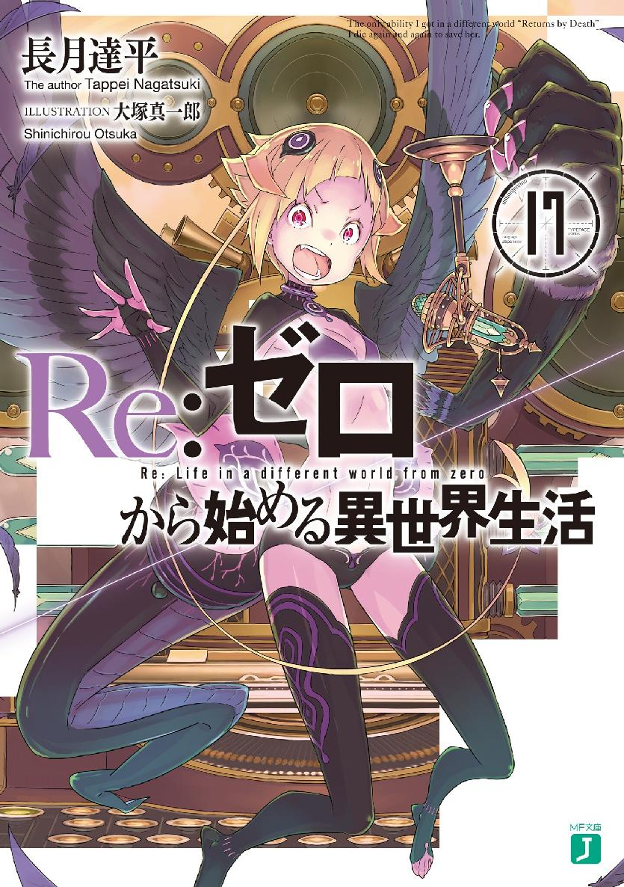
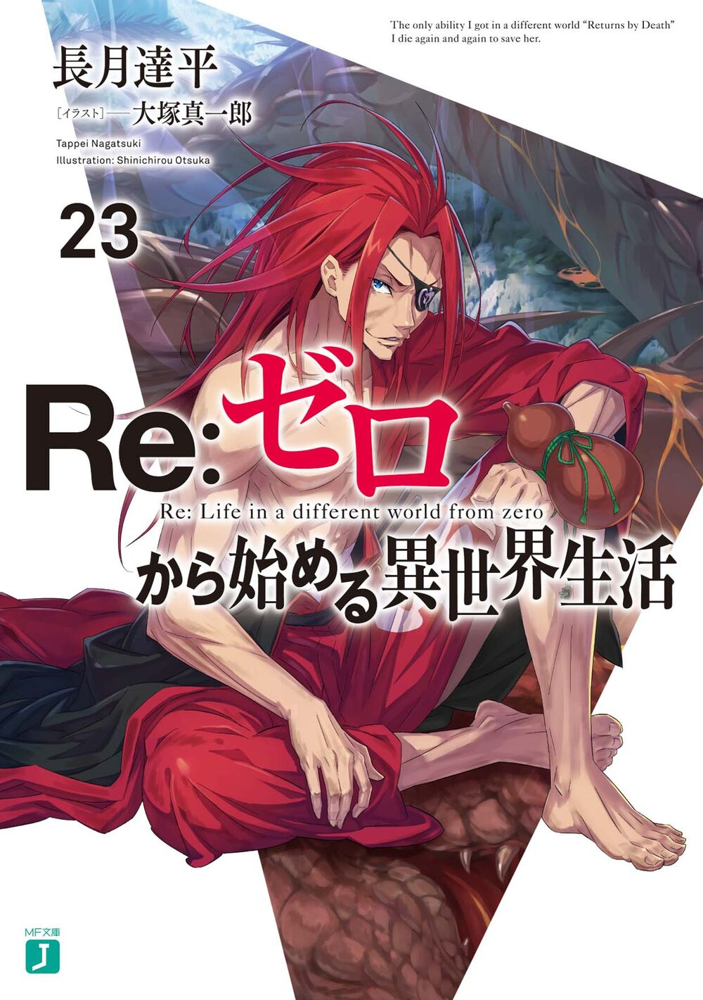
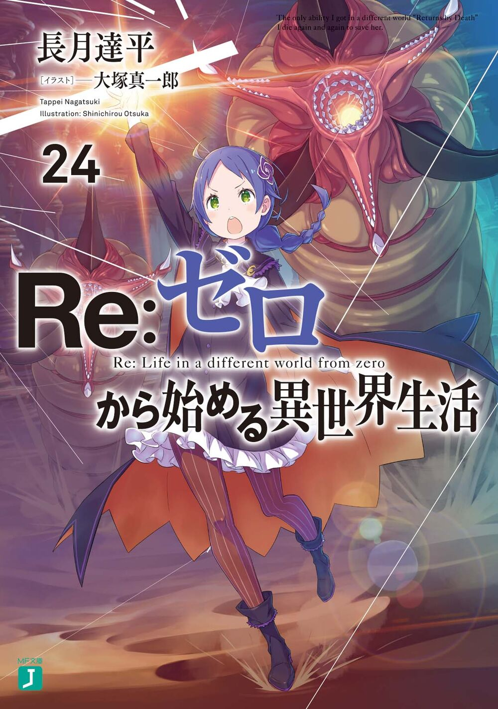

文库版
含 EPUB 资源下载
前言
WEB 版 与 文库版 的区别：
- WEB 版相当于草稿，文库版在此基础上进行了大量修缮（甚至删减）
- 文库版无论剧情精彩度、人物刻画深度、还是逻辑严谨度都比WEB版要好
- 推荐先看文库版，WEB 版建议用于了解最新剧情
主线
| MJ 文库版 | 封面 | 下载 | 对应 WEB 版范围 |
|---|---|---|---|
| EPUB 第 01 卷 |
 |
Github 腾讯微云 （58x6se） |
|
| EPUB 第 02 卷 |
 |
Github 腾讯微云 （ra9hx6） |
|
| EPUB 第 03 卷 |
 |
Github 腾讯微云 （cetnhi） |
|
| EPUB 第 04 卷 |
 |
Github 腾讯微云 （k9fjee） |
|
| EPUB 第 05 卷 |
 |
Github 腾讯微云 （e5pwkb） |
|
| EPUB 第 06 卷 |
 |
Github 腾讯微云 （if4cii） |
|
| EPUB 第 07 卷 |
 | Github 腾讯微云 （6ta7yu） |
|
| EPUB 第 08 卷 |
 |
Github 腾讯微云 （nwkf2t） |
（这卷改动极大，文库版 几乎把 WEB版 重写了） |
| EPUB 第 09 卷 |
 |
Github 腾讯微云 （93epcz） |
|
| EPUB 第 10 卷 |
 | Github 腾讯微云 （q6vthg） |
|
| EPUB 第 11 卷 |
 |
Github 腾讯微云 （a6f3u3） |
|
| EPUB 第 12 卷 |
 |
Github 腾讯微云 （3bgs6p） |
|
| EPUB 第 13 卷 |
Github 腾讯微云 （mt8kjq） |
|
|
| EPUB 第 14 卷 |
 |
Github 腾讯微云 （tppyrw） |
|
| EPUB 第 15 卷 |
 |
Github 腾讯微云 （4pmsxb） |
|
| EPUB 第 16 卷 |
 |
Github 腾讯微云 （9qsp4y） |
|
| EPUB 第 17 卷 |
 | Github 腾讯微云 （dw5txm） |
|
| EPUB 第 18 卷 |
 |
Github |
|
| EPUB 第 19 卷 |
 |
Github 腾讯微云 （mtabng） |
|
| EPUB 第 20 卷 |
 |
Github 腾讯微云 （hsjqh8） |
|
| EPUB 第 21 卷 |
 |
Github 腾讯微云 （w5gb9a） |
|
| EPUB 第 22 卷 |
 |
Github 腾讯微云 （7dc83x） |
|
| EPUB 第 23 卷 |
 | Github 腾讯微云 （xptx45） |
|
| EPUB 第 24 卷 |
 | Github |
|
| EPUB 第 25 卷 |
 |
Github 腾讯微云 （j8uj3d） |
|
| EPUB 第 26 卷 |
 |
Github 腾讯微云 （kwzicn） |
|
| EPUB 第 27 卷 |
Github 腾讯微云 （32m34c） |
|
|
| EPUB 第 28 卷 |
Github 腾讯微云 （f479pi） |
|
Ex
- 《Re：从零开始的异世界生活 - Ex1 狮子王所見之梦》
- 《Re：从零开始的异世界生活 - Ex2 剑鬼恋歌》
- 《Re：从零开始的异世界生活 - Ex3 剑鬼恋谭》
- 《Re：从零开始的异世界生活 - Ex4 最优纪行》
- 《Re：从零开始的异世界生活 - Ex5 緋色姬谭》
短篇集
- 《Re：从零开始的异世界生活 - 短篇集 01》
- 《Re：从零开始的异世界生活 - 短篇集 02》
- 《Re：从零开始的异世界生活 - 短篇集 03》
- 《Re：从零开始的异世界生活 - 短篇集 04》
- 《Re：从零开始的异世界生活 - 短篇集 05》
- 《Re：从零开始的异世界生活 - 短篇集 06》